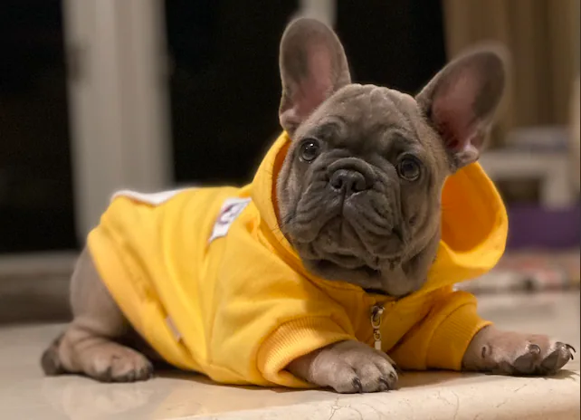

S16-E1 · Thank you for joining the 15-Minute Feel Good Challenge
Hi {first_name}!
Thank you for joining the 15 Minute Feel Good Challenge!
Today most of us are spending much more time at home. With that in mind, finding (and more importantly starting) practices that improve our quality of life in a short amount of time are VERY needed, and I want to help.

While a picture of my pup Basil has nothing officially to do with this challenge, who doesn't love puppies and WOW can being around animals help elevate our mood and help make us feel good!
Here's what you can do to get the most out of your challenge experience:
IMPORTANT: 1. Join the private Facebook Group where you’ll be able to watch and follow along live (recordings will be kept in the group for later viewing). 2. Add this email to your contact list so you don’t miss any important details. 3. Block out 30 minutes (the additional time is for discussion and any teaching components that will happen on certain days before the 15-minute routine begins) 4. Show up for the live calls on Facebook starting October 22nd at 9amPST / 12pm EST 5. If you know anyone who would be interested in joining, please send them over to www.kettlebelllifestyle.com/feelgoodchallenge.
Once the challenge begins, you can expect the following emails so you are prepared:
I truly believe that in just 15 minutes of focused effort you CAN create and build momentum to embody doing “less but better”. This will help you build your mental and physical strength and openness that we all need nowadays to thrive.
I look forward to seeing you in the Facebook Group!
Wishing you all the best, Mike Salemi |